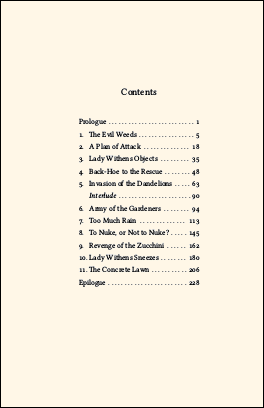
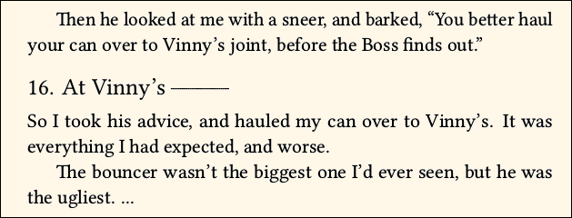

Documentation for novel document class
Documentation version: 1.38.
User Guide
9. Display, Start Pages;
Chapters; Continued Pages;
Footnotes, Endnotes.
Display, Start, and Continued Pages;
Footnotes and Endnotes
A display page stands by itself, has a unique purpose, and is never continued to another page. A blank page is considered to be a display, even when there are several blanks.
A start page is the first page of a continued section of related pages, with the same style and purpose. The important criterion is whether the section "might" continue to additional pages, not whether it actually does. Thus, a very brief Author's Note (essentially a one-page Preface) is considered to be a start page, because the author might have gone on for several pages.
Anything other than a display page or a start page is a continued page.
9.1 Display Pages
In the book's front matter, many (perhaps all) of the pages are display pages. In fictional works, once the main matter begins, the only display pages (if any) will be part separators, maps, and blank pages.
Display pages do not show a header or footer. At the top of the page, put this code:
\thispagestyle{empty}
Note that the header and/or footer is still there, and occupies its usual space. But it has no visible content. The page number does not appear in print, However, it is visible in the control panel of a PDF reader.
Blank pages are considered to be display pages. Te create a blank page:
\clearpage \thispagestyle{empty} \null \clearpage
If the preceding material ended with \clearpage or the following material begins with it, no problem. TeX wisely assumes that consecutive \clearpage commands are a mistake, and does not automatically skip a page between them. The \null command is the most effective way to show that you really did mean to create a page there.
A novel, or collection of stories, may contain these display pages: Half-Title, Frontispiece, Title, Copyright, Dedication, Epigraph, Map, Acknowledgements, Separator. Almost all of them, if used, are in front matter.
Note that a book's front matter does not have to be complicated. Here is an imitation of the entire front matter, from a detective novel written by a very famous author of such things. In order: Half-Title, Blank, Title, Copyright, duplicate Half-Title, Blank. A very decorative font is used for the book's title and the author's name.

9.1.1 Half-Title Page
Historically, the purpose of a Half-Title was to protect the title page during transportation and storage. This purpose has been obsolete for a long time, bcause modern books are printed and bound at once. But the tradition lives on. Use a Half-Title unless you absolutely must reduce the page count of your book.
The Half-Title is the first page of front matter. It is lowercase roman page i, even though the number is not printed. The only material on the page is the book's title (not author) and usually not even a subtitle. If the title is artistically designed, then the Half-Title may be designed the same way, but is usually at smaller size. Place the Half-Title wherever it looks good on the page (certainly not at top left). For example:
 \frontmatter % Sets page numbers to lowercase roman.
\frontmatter % Sets page numbers to lowercase roman.
\thispagestyle{empty} % No header or footer.
\vspace*{6\nbs} % Note asterisk. Skips 6 lines.
% Right-aligns half-title at 2x normal font size:
% \orbitron is defined as the non-TeX font Orbitron-Medium.otf
\stake\hfill{\orbitron\charscale[2]{Star Smash}}\par
\vspace{0.4\nbs}
% Decorative portion of half-title:
\noindent\hspace{12em}\charscale[1.6]{\decoglyph{r10059}}
\bigemdash[2,2]\stake\par
\clearpage % Ends the page.
You can do better than that, perhaps by using a fancier font than you use for ordinary text, or even by placing the Half-Title in the form of an image.
9.1.2 Frontispiece (usually blank)
 The verso of the Half-Title has page number
The verso of the Half-Title has page number ii, number not printed. Normally, this page is blank.
In the good old days (looong ago), this page might show an illustration. Search the Internet for "frontispiece" to see examples. At right is the frontispiece by William Blake for his poetry regarding Milton. In the original, it was in color (spectacularly expensive, back then).
If your Aunt Sally is a brilliant, internationally-known illustrator, and permits you (in writing, without royalties) to place one of her creations there, then that is a possibility. You might also use a photograph (reduced to grayscale), if your story is set in a real location. However, depending on location and jurisdiction, just because something is in plain public view does not necessary mean that you are free to take a photograph and use it commercially! That may even apply when it is a natural scene with no people in the picture. Here's a famous example, not too far from where I live.
Something that is an integral part of the story, such as a map of its fictional locale, should not be placed as a frontispiece. Actually, with fiction you have a lot of wiggle room, so a map is possible if its artwork is good enough to face the title page, and you don't have a better place to put the map.
The preparation and placement of images is described on another documentation page.
 Some publishers put a centered list of “Books by the Same Author” here. Or, if the particular book is part of a set (“Splork Chronicles, Volume VI”) that can be mentioned. However, in the print-on-demand market, your printing and distribution service may not permit you to do that, unless they carry all of the books.
Some publishers put a centered list of “Books by the Same Author” here. Or, if the particular book is part of a set (“Splork Chronicles, Volume VI”) that can be mentioned. However, in the print-on-demand market, your printing and distribution service may not permit you to do that, unless they carry all of the books.
So, it is best to leave this page blank:
\clearpage
\thispagestyle{empty}
\null
\clearpage
9.1.3 Title Page
The Title Page has page number iii, number not printed.
With novel, there is no automatic construction of a Title Page, because its original artistic design is important. Nothing says “this book was written by someone who normally writes term papers instead of fiction” more than a Title Page that looks like it belongs on a term paper. Don't be afraid to use stylish fonts that differ from whatever you are using for the main text, or create the title as an image.
If you wish to use gray text, you will need the graytext class option. Without it, text will always be black. But don't use the option unless you really need gray text somewhere in your book. Grayscale images will be grayscale, whether or not you choose this option:
\documentclass[graytext]{novel} % do not use graytext unless needed
Here are some commands that may be helpful for building your Title Page:
\thispagestyle{empty} % no header or footer
\vspace*{length} % puts space at top
\charscale[scale, position]{text} % changes text size and position
{\centering one line of text\par} % centers text
\stake\hfill text\par % pushes text to right
\InlineImage[options]{file} % see separate docs page
\BlockImage[options]{file} % see separate docs page
\vfill % pushes following text to bottom of textblock
Below is a sample Title Page. The \orbitron command calls for the font Orbitron-Medium.otf, which is not part of the TeX distribution. The \decoglyph command calls fo a decorative element from the NovelDeco.otf font, which comes with the novel class. The length \nbs is the normal baseline skip of the book's main font. The \stake commands place an invisible zero-width reference point, for the use of adjacent commands. Here is the code:

\clearpage
\thispagestyle{empty}
\vspace*{6\nbs}
\stake\hfill{\orbitron\charscale[3]{Star Smash}}\par
\vspace{0.4\nbs}
\noindent\charscale[3]{\decoglyph{r10059}}
\bigemdash[3.4,3]\stake\par
\vspace{0.4\nbs}
\stake\hfill{\orbitron\charscale[1.42]{A Sci-Fi Murder Mystery}}\par
\vspace{9\nbs}
\begin{center}
\charscale[4]{Dirk Hardcase}
\vfill
Meaningless Press\par
Eschwege • Merthyr Tydfil • Lethbridge\par
\end{center}
\clearpage
Remember that you can also use black-and-white line art, or a grayscale image. You may find it easier to design all or part of your Title Page in a graphics program, export as png or jpg, and place the image. Be sure to read how this must be done in novel class, as the image requirements and commands are different from those used in other document classes.
9.1.4 Copyright Page
The Copyright Page will be page iv, number not printed. It is always the verso if the Title Page.
This page should be styled differently from the main text. Typically, the vertical alignment leaves space at top. The final line may be at the bottom of the textblock. The text may be centered throughout (often used nowadays) or be left-aligned with ragged alignment instead of justification. The text will have one or both side margins increased, so that it does not occupy the full width of the textblock. Lines will not break with hyphenated words. All-uppercase words will be presented in small caps.
If you have a service prepare a Cataloging-in-Print data block for you, the file will show two hyphens to mean an em dash, because that's how word processors do it. In TeX, use three dashes instead.
Some commands useful on a Copyright Page:
\thispagestyle{empty} % no header or footer
\vspace*{length} % creates vertical space
% legalese: ragged lines, no hyphenation, no indent.
\begin{legalese} ... \end{legalese}
\begin{adjustwidth}{left}{right} ... \end{adjustwidth} % reduces width
\begin{center} ... \end{center} % if desired
\begin{parascale} ... \end{parascale} % shrinks text
\itshape{text} % italics, and can span paragraphs
\textsc{text} % lowercase to small caps (uppercase still uppercase)
\allsmcp{text} % uppercase and lowercase to small caps
\acronym{text} % uppercase to medium caps
\lnum{number} % lining numbers instead of old style
\_ % when underscore is in a URL
\% % when % is in a URL
\& % when & is in a URL
You normally do not need to write a lot of things on a Copyright Page. But if your novel has a lot of real-world material, some of it may require acknowledgements and permissions. They may be placed on the Copyright Page. If everything almost fits, but not quite, you can shrink it using the parascale environment. However, do not shrink it too much, and don't fill the whole page like it was ordinary story text. When you have a lot of acknowledgements and permissions, move them to a separate section. If your book has a Preface (uncommon in fiction), perhaps put them there. Or, create a separate Acknowledgements section (also uncommon in fiction).
If your book is print-on-demand, then be sure to comply with requirements for stating, or not stating, the publisher and place of printing. In print-on-demend, the publisher is you, not the printer or distribution service. For books with an international market, there may be more than one nation where it is printed.
Here is a sample abbreviated Copyright Page, centered style. Note that in the image, the text is displaced slightly to the left, because this is a verso page, and the right margin includes an allowance for gutter.

\clearpage
\thispagestyle{empty}
\vspace*{5\nbs}
\begin{center}
\itshape{
Copyright ©2017 Dirk Hardcase.\\
All Rights Reserved.\par
\null
This is a work of fiction.\\
All persons and events are imaginary.\\
Resemblance to any real persons or events\\
is entirely coincidental.\par
\null
Printed in the United States of America\\
on acid-free paper.\par
\null
\allsmcp{FIRST EDITION}, March 2017.\par
\null
\allsmcp{ISBN} 9-876-54321-0\par
\null
Published by Dirk Hardcase,\\
Anytown, U.S.A.\par
\null
Inquiries for Cataloging-in-Publication data\\
should be directed to the author's web site:\par
\null
http://example.com/bigdealauthor.html\par
} % end \itshape
\end{center}
\clearpage
Sample abbreviated Copyright Page, alternative style. This style is more effective when there are more details, particularly if there is a complete Cataloging-in-Publication data block:

\clearpage
\thispagestyle{empty}
\null\vfill
\begin{adjustwidth}{0em}{8em}
\begin{legalese}
Copyright ©2017 Dirk Hardcase.\\
All Rights Reserved.\par
\null
This is a work of fiction.\\
All persons and events are imaginary.\\
Resemblance to any real persons or events\\
is entirely coincidental.\par
\null
Printed in the United States of America\\
on acid-free paper.\par
\null
\allsmcp{FIRST EDITION}, March 2017.\par
\null
\allsmcp{ISBN} 9-876-54321-0\par
\null
Published by Dirk Hardcase,\\
Anytown, U.S.A.\par
\null
Inquiries for Cataloging-in-Publication data\\
should be directed to the author's web site:\par
http://example.com/bigdealauthor.html\par
\end{legalese}
\end{adjustwidth}
\clearpage
9.1.5 Other Display Pages
Most fictional works do not need other display pages. However, it is bad practice to go directly from the Copyright Page (verso) to the start of your story (recto). If you do not know what else to do, have a look at the Epigraph, below.
9.1.5.1 Dedication: A Dedication is not required. But sadly, nowadays many authors write a Dedication, which is often frivolous and detracts from the book. If you feel that you need a Dedication, why not put it on your web site? Then you can always edit or remove it, if the subject or your affection runs off with someone else.
If used, a Dedication is normally on page v, immediately following the Copyright Page. An exception might be if your work is a reprint of someone else's work, in which case you do not want the original author's Dedication to be interpreted as being your own.
 Keep it simple. If your book is combat fiction, it might be:
Keep it simple. If your book is combat fiction, it might be:
\clearpage
\thispagestyle{empty}
\vspace*{12\nbs}
\begin{center}
\charscale[1.25]{\textsc{To Those Who Served}}\par
\end{center}
\clearpage
9.1.5.2 Epigraph: OBSOLETE
Sometime between March and May 2017, either I changed something in the underlying code, or TeX changed something, that caused the Epigraph command to stop functioning. I have not been able to hunt it down yet. Unless and until you have a code version 1.3 or greater (current is 1.2), do not use the Epigraph command, and remove it from any prior documents. You can emulate it using the adjustwidth environment, and some other easy code.
Not every book has an Epigraph page, but it is a very useful way to separate the Copyright Page from the beginning of your story, when you have nothing else to put in front matter. In this case, the Epigraph appears as page v (recto), usually with a blank verso, and then your story begins as main matter on the following recto.
You can also include an Epigraph, even if your front matter has more material. An Epigraph may go on a recto or verso page. So, if you have Dedication (page v) you may place an Epigraph on page vi, if you wish; but it does not have to go there. It may even go on the final front matter page, facing the beginning of your story, provided that it is particularly well-suited to setting the mood, and is not distracting.
The purpose of an Epigraph is to set the mood for your own story. Perhaps it will give a hint of the genre, or of the theme. Or it may be pretentious, by implying that your own work can be compared to the famous work cited. Or, the Epigraph may quote from a fictional work. For example, if your story is sword-and-sorcery set in ancient China, you might quote from the imaginary Grimoire of Wong Dung. You may even quote from your own book: J.R.R. Tolkien's Epigraph for each book of his Lord of the Rings trilogy was the longer form of the ring's inscription.
Use the adjustwidth environment to center the Epigraph on the page, as a block that does not occupy the full width. If you do not need the text to be justified, the legalese environment will provide ragged lines without hyphenation. After the text, place the source of the quotation, right-justified, and perhaps preceded by an em dash. Whether you place only the name of the person quoted, or the title of the book quoted, or something else, is a matter of formal style; see what others have done. But keep in mind that you should not use a work currently under copyright for your Epigraph. Translations of older works may be copyrighted, because the translation is sufficiently recent!
Here is a sample Epigraph, in which the fictional speaker appears as a character in the book. A glance at this, and you know where the story is headed:

\clearpage
\thispagestyle{empty}
\vspace*{10\nbs}
\begin{adjustwidth}{7em}{7em}
Let me tell you, there's nothing more exciting than the brouhaha at Mickey's Pub each Saturday night in April.\par
\stake\hfill---Dorf McNorf\par
\end{adjustwidth}
\clearpage
The novel class also provides its own Epigraph (not the capital E) command:
\Epigraph[alignment,scale,width]{text}
The optional alignment may be one of l, c, or r, which stand for left, center, right. Default is c. This is the horizontal alignment of the epigraph block as a block, not the alignment of the lines within the epigraph.
Within the Epigraph block, alignments l and c produce left-alignment of the lines, with ragged right ends. Alignment r produces right-alignment of the lines, with ragged left ends.
There is no particular width to the Epigraph block. If you write a line that is too long, it will not wrap, but will flow into the page margin. Use \\ (not \par) to manually break lines.
Exception: The final line, typically an attribution, should not end in \\. It may be without a closure. But if the final line does not end in punctuation, it may be very slightly to the right of its correct position. In this case, ending the line with \par tweaks it.
In the unlikely event that you need to use the ampersand, be sure to write it as \& rather than as mere &.
There is no provision for horizontal lines, or other styling used by academics.
Here is an example, which will be horizontally centered on its page. For typical text size on 5.5"x8.5" Trim Size, the Epigraph will be slightly above the middle of the page, and occupy about 50% of the textblock width.
Note that I subsequently added the black border during image editing; it is not part of the Epigraph.

\thispagestyle{empty} % no header or footer
\vspace*{10\nbs} % for vertical position
 \Epigraph[c]{% percent prevents newline
\Epigraph[c]{% percent prevents newline
When sacred swallows sound at dawn,\\
And eager eagles eye their prey,\\
Then shall Shan-Sun wreak revenge.\\
\hfill---Book of Bjorn\par
} % end of Epigraph
An Epigraph like that tells you something about what to expect in the book. Actually, it tells you to expect about 350 pages of badly-written prose, interspersed with badly-written poetry. You can do better than that.
Note that the Epigraph command may also be used inside the ChapterStart environment, as described farther down this page.
9.1.5.3 Table of Contents: Do not place a table of contents just because you can. A table of contents is more useful when the story consists of discrete episodes with distinctive names, not just numbers. Or, if the book is a collection of short stories, a table of contents is mandatory. When a story is an “action adventure,” in which short chapters move along in rapid succession, a table of contents would be unusual.
If you use a Table of Contents, it must be on a recto page. That would be page v if your book has no Dedication or Epigraph, or page vii if it has one or both of them.
The Table of Contents does not include itself or anything preceding. If the front matter has textual sections such as Foreword, Preface, or Author's Intoduction, they are listed in the table (and will have lowercase roman numerals). In fiction, you might have at most one or two maps, which may be listed in the Table of Contents, rather than in a separate list of Illustrations.
If your book has Part Separators (described lower on this page), then each Part Separator is listed in the table, but its page number is not provided unless the separator has a meaningful amount of text. So, “PART I. IN THE CASTLE” would not have its page number listed in the table. However, “PART I. IN THE CASTLE. We begin our story in Castle McNada, where there has been an altercation between Lord Withens and Sir Nadie regarding the disposition of the gnomes.” provides enough information to deserve its page number in the table. Use your discretion.
In most fiction, the first entry in a Table of Contents will be the first chapter of the story, which will be on page 1, or in some cases, page 3.
toc environment: Avoid any of the table environments that come with TeX or its packages. These do not provide the most attractive presentation for fiction, without a lot of work on your part. With novel you have an environment defined specifically to meet the needs of fiction:
\begin{toc}[extra entry separation]{extra margins} ... \end{toc}
The toc is not indented, and text within it is not indented.
• The optional argument is a number. It is the portion of normal baselineskip that will be added beneath each \tocitem entry (see next section). Default is 0, meaning that there is no extra skip between items, and normal baselineskip is maintained. A value greater than 0 spreads the entries, which could be attractive if there are only a few chapters and you'd like to use more space on the page. For example, a value of 0.25 means that a gap of 0.25 normal baselineskip will be added beneath each entry. A small negative value will crowd the lines together, but there is a limit (approximately -0.1) before the lines cannot be squeezed any tighter.
Note that the optional argument only applies to \tocitem entries, not to any other text within the environment.
• The required argument is a length, which will be the amount of extra margin added at left and right of the table (using adjustwidth). A value of 0pt allows the table to occupy the full width of the textblock. A value of 2em adds 2em to the margin on each side, so that the width of the table is 4em less than the width of the textblock.
Note that it is best to specify horizontal lengths, within the textblock, in units of em or the proportional \parindent or \textwidth.
Typically, the label for the toc will not be as bland as "Table of Contents" or even "Contents." One possibility is to use the book's title (and subtitle, if any). You can add a graphic element or a short remark, if you wish.
In most cases, the table's title should not be placed where the first line of text would normally appear. This is because a fictional table of contents rarely fills the page, so it is more attractive to allow some space at top. Another reason is that if you use the \charscale command to increase the size of the topmost text, it will infringe the top margin, unless you provide at least one line of space above it. The \vspace*{length} command is best for this purpose.
\tocitem: The \tocitem command, and its starred version, are used for individual entries in the TOC environment. Do not use this command for general text that is not linked to a page number.
\tocitem[chapter number]{description}{page number} and starred version
• The optional argument is the chapter number, at most two digits. The number will be left-aligned, with a period automatically added. Following the period will be the amount of space needed to keep the following description aligned.
If the optional argument is omitted (or empty), then there is no space, and the following description will align to the left of the table.
If the optional argument is the tilde character ~ then no number or period is printed, but the space is occupied, so that the following description aligns as if you had entered a chapter number.
• The description is usually the chapter title. If it cannot easily fit on one line, then use an additional \tocitem, because the text cannot be wrapped. The following example shows how this can be done.
• Without the asterisk, \tocitem fills the area between the description and the page number with empty space. The starred \tocitem* command fills with a dotted line, and is very attractive.
You may use ordinary style commands, such as \emph{}, in the entries.
Example of toc: The use of the toc environment, and the \tocitem commands, are easily understood by looking at an example. The border of the image is where the normal page margins would be (the actual page is larger). The little explanation at top happens to exactly fit the table width, because I tweaked the text and the width until it fit!

\clearpage
\thispagestyle{empty}
\begin{toc}[0.25]{3em}
\vspace*{4\nbs}
{\centering\charscale[1.25]{The Withens Retaliation}\par}
\null
In which Lord Withens, fresh from a program in horticulture, unleashes secret desires on the garden.\par
\null\null
\tocitem*[1]{The Evil Weeds}{1}
\tocitem*[2]{A Plan of Attack}{14}
\tocitem*[3]{Lady Withens Objects}{35}
\tocitem*[4]{Back-Hoe to the Rescue}{48}
\tocitem[5]{Invasion of the Dandelions}{}
\tocitem*[~]{\emph{Interlude}}{63}
\tocitem*[6]{Army of the Gardeners}{94}
\tocitem*[7]{Too Much Rain}{113}
\tocitem*[8]{To Nuke, or Not to Nuke?}{145}
\tocitem*[9]{Revenge of the Zucchini}{162}
\tocitem*[10]{Lady Withens Sneezes}{180}
\tocitem*[11]{The Concrete Lawn}{206}
\end{toc}
\clearpage
9.1.5.4 Part Separator: A Part Separator is a recto page marking an abrupt change between very different portions of the book. Ordinary new chapters are not Part Separators. Many books have no need of Part Separators.
One kind of Part Separator is the “Inner Half-Title”. This is a recto duplicate of the Half-Title page. It may appear in these situations: (a) You need to put something between the Copyright Page and the start of the story, but you do not want to put anything else there. (b) The front matter has a Foreword or Preface, or other material that takes up a number of pages, and you wish to provide a visual separation between the front matter and the main matter.
The other kind of Part Separator is, as you might guess, a means to separate parts of the book. For example, if your book consists of two novellas, then each novella would have its own Part Separator, being a simplified title page for the following story. Or, if you wish to suggest an interruption in the flow of a single story, you might divide it using Part Separators. An example is each book in J.R.R. Tolkien's Lord of the Rings trilogy, in which each bound book is partitioned into two sub-books.
A Part Separator is part of main matter, and has an arabic page number. However, the page number is not printed (possible exception if the separator also contains substantial text, by way of introduction). Thus, the first Part Separator would be page 1, and its story would begin on page 3. Wihout a Part Separator, the story would begin on page 1.

\clearpage
% \mainmatter % if needed to begin at page 1
\thispagestyle{empty}
\vspace*{10\nbs}
% the tilde provides better separation:
{\centering\charscale[2]{PART~ I}\par}
\clearpage
The verso of a Part Separator is usually blank. But you could put a map there, or an Epigraph. It's up to you.
9.1.5.5 Map or Other Illustration: A map, or other illustration, is simply a large image. It must be prepared at 100% scale and actual resolution, according to the detailed requirements described on that documentation page.
Since a (fictional) map is part of the story, it belongs in main matter rather than in front matter. But where you put is is up to you.
A map or illustration may be verso or recto.
9.2 Start Pages: General
Start pages begin a section that may continue to additional pages. The key word is "may." A section may be so brief that its start page is its only page.
9.2.1 \thispagestyle{choose}
A start page does not have a header. But if the normal page layout has a footer, then a start page will also have the footer. Thus, the page number (folio) will be printed on a start page, or not, depending on whether or not the normal layout has a footer. This is controlled by the following command:
\thispagestyle{footer}
The above code actually means, “footer, if normally available.” It does not create a footer that would not otherwise be present in your general book layout.
The novel document class has an additional capability. On a start page, you may create a temporary footer containing just the page number. There are two ways to do that:
\thispagestyle{dropfolioinside}
When you drop the folio (page number) inside, you reduce the height of the text block by one line, just on that page. The line that would have been the last one there, is moved to the top of the following page. However, if this command is used on a ChapterStart page (see below), then instead of moving that line, the space occupied by the chapter title block is reduced, so that it is not necessary to flow the line to the following page.
Then, the page number is centered where the last line of text would have been placed.
The following image shows three pages of a Foreword, from a book that uses header but no footer. On its start page, the folio has been dropped inside. Color added for illustration.

\thispagestyle{dropfoliobeneath}
When you drop the folio beneath, you do not change the height of the textblock. Instead, you place the page number centered where one additional line of text would be. Thus, the number sits within the bottom margin. This is allowable if the width of the bottom margin exceeds the minimum clearance required by the printer. However, if you do not have the excess margin, do not use this command.
In very rare cases, which I have only seen in some non-fiction, the book has a header but no footer, and its start pages must show the page number (but not text) in the header. There is a command for that:
\thispagestyle{forcenumber}
With forcenumber, if a footer exists it will be used. Otherwise, the command assumes that the page number is at the outside margin of a header, and allows only that portion to print. Do not use the above command, unless you really need it.
\SetVersoHeadText{new~verso~head} \SetRectoHeadText{new~recto~head}
These commands only apply if you chose a header/footer style that includes text in the header. They will not throw an error if you use them with other header/footer styles; but they will have no effect.
When your document begins, novel automatically places the author as verso header text, and the title as recto header text. They will appear on all pages that have a visible header (but not on pages where \thispagestyle blanks the header). This is the norm for many works o fiction.
However, there are occasions when something else should appear in the header text. If your book has a Foreword, Preface, or similar section in its front matter, you do not use the author and title there. Instead, you simply place the section title (Foreword, Preface, or whatever) both verso and recto. The reasons are simple: (a) The front matter is not actually part of the story, and (b) It might have been written by someone other than the author.
In the main matter, you might prefer that the chapter title (or story title, if short stories) appear instead of the author or book title. Or maybe something else. It is up to you, but be aware that some print services object to headers that change from place to place, as it creates the impression that portions of several different books are being assembled in error.
Only use \SetVersoHeadText or \SetRectoHeadText following \clearpage. The effect will be applied immediately, and continue indefinitely, until the commands are re-issued.
In the header text, use tilde rather than space to separate words. This improves the inter-word spacing. Perhaps at some future time this will not be necessary.
The header text will appear in the font chosen as headerfont. You may over-ride that with a local font command. The text may be styled with commands such as \textsc or \textls or \emph if desired. Do not use underline or bold.
 Here is an example, where the author wrote a Preface several pages long, and the book layout uses a header. The
Here is an example, where the author wrote a Preface several pages long, and the book layout uses a header. The ChapterStart environment is used, but this is not a requirement. The lipsum package was used for text fill:
\clearpage
\thispagestyle{footer} % or dropfolioinside or dropfoliobeneath
\SetVersoHeadText{\textsc{Preface}}
\SetRectoHeadText{\textsc{Preface}}
\begin{ChapterStart}
\vspace*{2\nbs}
\ChapterTitle{Preface}
\end{ChapterStart}
The inspiration for this book...\par
\lipsum
But while I was held captive...\par
\lipsum
Clawing my way to the sunlight...\par
\lipsum
... And I hope you will enjoy it.\par
\null
\stake\hfill Dirk Hardcase.\par
\stake\hfill Springfield, March 14, 2017\par
\clearpage
% Be sure to re-set the head texts now!
9.3 Start Pages in Front Matter: Foreword, Preface, etc.
In most cases, a work of fiction will have no start pages in front matter. To put that another way, the front matter will consist entirely of display pages, as I have defined these terms. Example: Page i is the Half-Title; ii is blank; iii is the Title; iv is the Copyright; v is a Dedication, Epigraph, Table of Contents, Map, or duplicate Half-Title; vi is blank. That's all the front matter you need.
However, if your book has a Foreword, Preface, Introduction, separate Acknowledgements, or similar section in front matter, then each begins with a recto start page. This is the case, even if the section is merely one page. If the section has an odd number of pages, then a blank page is inserted after it, so that the next section begins recto. Thus, if you have several sections like that, there will be several blank pages here and there, creating the impression that your book was padded. Solution: Edit!
A potential problem arises when your book is of the “discovered lost manuscript” genre: The author pretends to be an archaeologist or professor who has discovered or translated a manuscript, or ancient inscriptions. In some cases, there may be more than one discoverer/translator involved. The author may even use his or her real name, in a fictional introduction. So, should the “archaeologist's” tale of discovery be in front matter, where it would be if it were a true academic work? Or should it belong in main matter, because it is fictional? Same with the “translator's” notes, and author's own introduction. My understanding of the Chicago Manual of Style (hardcover 16.ed., items 1.42, 1.46) is that it all belongs in main matter. But in established, printed fiction I have seen it both ways.
9.4 Start Pages in Main Matter: New Chapters
In the main matter of most books, the only start pages are new chapters. Actually, I cannot think of an exception to this. Remember that Part Separators are (usually) treated as display pages. Maps are always display pages, unless they are so small that they fit on a page with continued text.
If your novel consists of chapters that begin on their own page, or if your book is a collection of stories, then you should use the ChapterStart environment to enclose the block of text (and possibly image) that starts each new chapter.
You may place almost anything you like at the beginning of new chapters, but in reality there are only a limited number of useful things. The novel class has special commands for handling them, especially for the needs of fiction.
If your book is actually a quick succession of many short chapters, then it might be better to treat them as scenes. See the scene commands, lower on this page.
9.4.1 \SetChapterStart{pagestyle}
When you use the ChapterStart environment, described below, it will use \thispagestyle{footer} by default. That is, no header will be printed on that page. If the book layout normally has a footer, it will be displayed (and thus the page number, which is in the footer, will be shown). But if there is normally no footer, no page number will be shown, so the default is equivalent to \thispagestyle{empty}.
You can globally change the default behavior, with this Preamble command:
\SetChapterStart{some other choice of pagestyle}
Other choices of pagestyle are dropfolioinside, dropfoliobeneath, or very rarely forcenumber.
9.4.2 \begin{ChapterStart}[lines] ... \end{ChapterStart}
The ChapterStart environment reserves a block of space at the top of the textblock. The same space is reserved, no matter how much or how little content you put inside. The optional argument sets the number of lines displaced by the block. Its default is 10, minimum 4.
You will need to use \clearpage prior to each ChapterStart.
If you put a lot of material inside ChapterStart, it will not push the story farther down the page. Instead, the material inside the ChapterStart will overflow the reserved area, and mingle with the text below. Normally this is very undesirable. However, it might be attractive, if your ChapterStart contains an image that you wish to dangle underneath the following text.
For a particular chapter, if you wish to use a page style that differs from the one specified by \SetChapterStart, then you must put the \thispageStyle command before \begin{ChapterStart}.
If you are using symbolic footnote markers, each ChapterStart re-sets the symbols.
The first line of main text, following ChapterStart, will not be indented.
9.4.3 Pre-Styled Chapter Title Commands
Several commands are specifically designed for use inside the ChapterStart environment. If you use them anywhere else, then the text line grid will be disturbed. So, don't do that, with the possible exception of display pages where the line grid does not matter.
Each of these commands may only be used for a single line of contents. If the contents cannot fit on a single line, then you must manually break and issue the command twice. The commands may be used in any order, may be used more than once, or not at all.
 9.4.3.1\ChapterTitle{text} sets its text using
9.4.3.1\ChapterTitle{text} sets its text using chapterfont. The default is the main font scaled 1.6, with lining numbers.
9.4.3.2\ChapterSubtitle{text} sets its text using subchfont. The default is the main font scaled 1.2, with lining numbers.
9.4.3.3\ChapterDeco[scale]{text} does not commit to its contents. Typically a decoration will be used, perhaps from decofont. The optional argument is a scale factor to be applied to the required argument. Many horizontal decorations need to be magnified.
Example, where \clearpage and \mainmatter were already issued:
\thispagestyle{dropfolioinside}
\begin{ChapterStart} % default 10 lines
\null % for positioning title
\ChapterTitle{Prologue}
\ChapterDeco[4]{\decoglyph{r9548}}
\ChapterSubtitle{The Finding of the Manuscript}
\end{ChapterStart}
% then the main text
9.4.4 ChapterStart With Image
You can use an image in chapter titles. If you place an image, use one of the image commands defined by novel elsewhere in the documentation. Any other method is likely to push the following text off-grid.
Be sure that you are licensed to use the image. Many clipart catalogs "for personal use only," prohibit usage in commercial books. One possible source is openclipart.org (note the .org).
 9.4.4.1 Text Over Image: You may position text over an image. Be aware that overlapping text and graphics may be interpreted as a mistake, by human reviewers. It is best to use black text, or grayscale text that is much darker than the underlying image. Results are uncertain if you try to place light text over a dark image.
9.4.4.1 Text Over Image: You may position text over an image. Be aware that overlapping text and graphics may be interpreted as a mistake, by human reviewers. It is best to use black text, or grayscale text that is much darker than the underlying image. Results are uncertain if you try to place light text over a dark image.
Example, where the command \unifrac calls for the font UnifrakturMaguntia.ttf. Note that the font command is outside \charscale:
\begin{ChapterStart}
\BlockImage{sword.png} % centered by default
{\unifrak\centering\charscale[3,0pt,4\nbs]{35}\par}
\end{ChapterStart}
9.4.4.2 Text as Part of Image: If the text is not ordinary black, or not much darker than the background image, then it is better to include the text as part of the raster image. The reason is that there is no "white ink." Although light text over a dark image will appear correctly in PDF, and print that way on most printers, there are exceptions. If in doubt, ask your print service. In this example, the number is built into the image itself:
\begin{ChapterStart}
\BlockImage[l]{smfingerprint8.png}
\end{ChapterStart}
9.5 Continued Pages
I define continued page to mean a page that has a noticeable break, but without necessarily starting another page. Thus, the \clearpage and \thispagestyle commands are not used, and it is uncommon to change header text.
9.5.1 \QuickChapter[linelength]{chapter title}
If your novel is the kind of story that consists of numerous short chapters in rapid succession, then you probably do not wish to begin each chapter on its own page, with a block of whitespace at the top. The \QuickChapter command provides an alternative to ChapterStart.
The \QuickChapter command inserts two blank lines. In the gap, the chapter title is left-justified using subchfont (not chapterfont). It is slightly raised from the normal baseline, because this looks better; but the following text is back on-grid. The start of the following text will be un-indented.
If the optional linelength is provided, then a dash will be written after the title, at the position and thickness typical of the em dash in subchfont. If linelength is specified in units of length, then that will be the length of the line. But if linelength is an asterisk, then the line will fill to the right margin.
Note that this command is too obstrusive for mere scene changes within a chapter.
Example:
Then he looked at me with a sneer, and barked, ``You better haul your can over to Vinny's joint, before the Boss finds out.''\par
\QuickChapter[3em]{16. At Vinny's}
So I took his advice, and hauled my can over to Vinny's. It was everything I had expected, and worse.\par
The bouncer wasn't the biggest one I'd ever seen, but he was the ugliest. ...

9.5.2 Scene Breaks
There are several commands dedicated to the purpose of scene breaks.
9.5.2.1 \scenebreak inserts a one-line blank skip. The following line of text is not indented.
9.5.2.2 \sceneline inserts a one-line skip, containing a short centered line. The following line of text is not indented.
9.5.2.3 \scenestars inserts a one-line skip, containing three spaced, centered asterisks. The following line of text is not indented.
Examples:

\noindent It was a dark and stormy night.\par
Lord Withens, the last of his line, hurried through the gloom to Castle McWhistle, where Lady McWhistle awaited.\par
\scenebreak
Well, maybe it was not very dark.\par
But to Lord Withens, it seemed dark enough. Or rather, he hoped it was dark enough. Lord McWhistle was suspicious.\par
\sceneline
Actually, it was not all that stormy, either. But the Withens clan never tolerated drizzle, much less a storm.\par
Who could blame them? It's not like they lived in Italy.\par
\scenestars
Ah, such ill fortune haunted the Withens!\par
Unfortunately, novelists of that era had so little to write about, or they would have chosen another family to pursue.\par
9.5.3 \IndentAfterScenebreak
This global command may only be used in the Preamble.
Normally, text begins without a paragraph indent, at each new scene. This is standard in fiction. If you prefer that each new scene begins indented, use this command. It works with \scenebreak, \sceneline, and \scenestars.
9.6 Footnotes
This document class has limited support for footnotes, because footnotes are hardly ever used in original fiction. Nevertheless, they do appear on occasion.
Footnotes appear at the bottom of the page where they are placed. There is no option to accumulate them to another location. Very long footnotes might straddle pages, but that situation is uncommon in fiction.
If you have a lot of footnotes, consider endnotes instead. Both may be used.
9.6.1 \SetMarkers[real,fake]{asterisk, dagger, number}
This command is used only in the Preamble.
A "marker" is a superscript or subscript, however used. Thus, a footnote or endnote is indicated by a marker in the main text (but not in the footnote or endnote itself).
Most book-quality Open Type fonts have markers in style sets (sups, sinf, subs). In professional fonts, the marker glyph weights are adjusted for consisent appearance compared to ordinary glyphs. However, many free fonts do not adjust marker glyph weights, so the markers may appear too small, or too light.
The option real (default) attempts to use the Open Type feature sups for superscripts, and the feature sinf (preferred) or subs (alternate) for subscripts. If the requested feature is not available, then it will be faked, by scaling/raising/lowering ordinary characters from the basefont (lining numerals will be used).
Option fake ignores whether the Open Type features are available, and simply fakes them.
Thus, you may choose whether real or fake markers look better, depending on the font you are using. What looks better in one font may not look better in another.
The required argument applies only to markers created by the \footnote command. It does not apply to endnotes, or to manually placed superscripts and subscripts.
asterisk (default) uses symbolic footnote markers. The symbols rotate in order * † ‡ § ** †† ‡‡ §§ until reset.
dagger uses symbolic footnote markers, but without asterisks. The symbols rotate in order † ‡ § †† ‡‡ §§ until reset.
number uses numerical markers. Due to possible conflict, the log file will have a "Big Bad Warning" if you use a numerical footnote marker in a document that also has endnotes, since endnotes alays have numerical markers.
9.6.2 \realmarker \fakemarker
Within the body of the document, you may use \realmarker and \fakemarker to change your preference. The choice remains in effect until you change it again.
The option real/fake applies wherever superscripts or subscripts are used, not just for footnotes or endnotes.
9.6.3 \footnote[option]{text}
The \footnote{text} command places a "marker" at the place where the command is written. The included text is written at the bottom of the page, beneath a short line that separates it from the main text. The footnote text is at smaller size and line skip, and has the same marker placed before it. All of this is automatic.
You may, if necessary, apply some style to the footnote text. For example, if you are referring to another work, its title might be in italics.
Normally, no option is used. If you use option 0 (zero) then no marker will appear in the main text, and the footnote text will appear without a marker. The count of markers is not incremented. This applies whether the markers are numbers or symbols.
• Trick: If you are using footnote numbers, but wish to place a special footnote using a symbol, you can do it manually. For example:
He blinked.*\footnote[0]{* No, he didn't.}
• Avoid use of underlining, as it is considered bad style, due to visual distraction.
9.7 Endnotes
Endnotes are sometimes used in fiction, particularly for the kind of novel that pretends to be a lost manuscript, or the translation of an ancient text. The endnotes, by the fictional discoverer or translator, pretend to be an academic discussion of items in the main story. Unlike footnotes, which show quick points that must be immediately known by the reader during the story, endnotes are often a disguised chapter in themselves.
You may use both footnotes and endnotes, if you wish. However, if endnotes are used, then footnotes must be marked by symbols, rather than by numbers, to avoid confusion. The counts for endnotes and footnotes are independent.
9.7.1 \endnote
The \endnote command inserts a superior number in the text. A running count of the numbers is automatically updated.
The endnote numbers run continuously through the text, without reset. If you wish to reset the count (perhaps at new chapters), you have to do it manually, using \ResetEndnote.
When you use \endnote there is no provision for the actual note. If you wish to write a reminder to yourself, about why you put an endnote marker there, use \memo{}. The argument of \memo will not be printed, and will not be remembered for later use.
9.7.2 \endnotetext{number}{text}
The \endnotetext command is a simple way of styling endnotes. You do not have to use it, if you have your own method.
The first argument is usually the endnote number. A period and following space will automatically be added, so that the text of the note is block-indented. You may use \emph{number} if you prefer the number to be in italics.
The text must be one paragraph. Be sure to end with \par or equivalent.
If the note needs more than one paragraph, then continue like this, with an empty note number:
\endnotetext{}{\indent text}
• In novel, you must create and style the page(s) with endnotes yourself! There is no provision for bibliography, and no provision for any other kind of automated styling. This is because the endnotes, being fictional, are more like the main text than any academic style. Think of the endnotes as just another chapter, but starting with something that identifies them as being endnotes.
• Although novel provides several ways of partitioning backmatter, this is discouraged in fictional works. Normally, endnotes continue as mainmatter, with arabic page numbers.
Example:
\endnotetext{9}{Yang Sho-Nuff was the twelfth son of the elder god of the ancient Who-Zit Clan, with power over the forces of rust.\par}
\endnotetext{}{\indent However, since this was not yet the Iron Age, the terrible might of Yang Sho-Nuff was largely unrecognized.\par}
\endnotetext{10}{As Professor Withens notes in his treatise, \emph{When Sho-Nuff Was Not Enough}, the ceremony of daily human sacrifice had a devastating effect on the tribal population.\par}